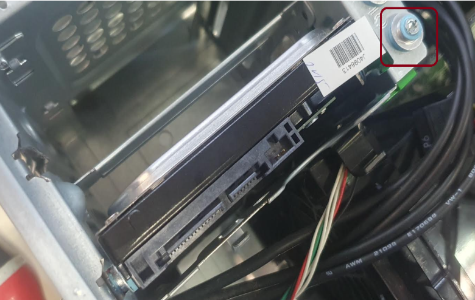
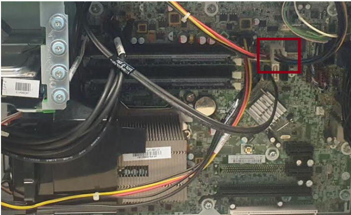
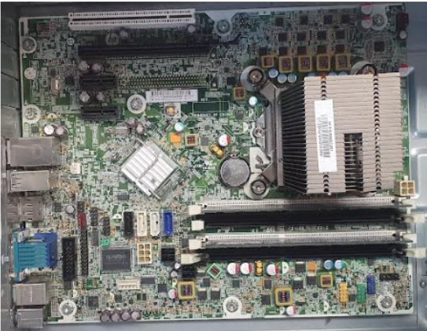

📍 Présentation
Ce projet porte sur le démontage d'un PC afin d'identifier, retirer et remplacer ses composants internes. L'objectif est d'illustrer les compétences acquises en gestion et maintenance des systèmes informatiques. Tout au long de ce processus, chaque composant est démonté, analysé et les pièces défectueuses sont remplacées si nécessaire.
🛠️ Démontage des Composants
Retrait des vis
- Type de tournevis utilisé : Cruciforme
- Nombre de vis fixant les panneaux latéraux : 2 vis
Déconnexion des câbles
- Type de câble déconnecté : Câble de données SATA
Disque Dur
- Type de vis fixant le disque dur au boîtier : 4 vis de type œillet (2 vis derrière et 2 vis devant)
- Le disque dur est monté sur un support de montage : Le disque est maintenu par des vis de type œillet
Lecteur de disquette
- Présence du lecteur de disquette : Aucun lecteur de disquette n'est présent
- Type de câble déconnecté : Aucun câble n'a été déconnecté, car il n'y a pas de lecteur de disquette
- Nombre de vis maintenant le lecteur optique dans le boîtier : 4 vis (2 vis derrière, 2 vis devant)
Connecteur de la carte mère
- Nombre de broches du connecteur ATX : 6 broches
Alimentation électrique
- Ventilateurs alimentés par l’alimentation : Le ventilateur du processeur et celui du boîtier sont alimentés par l’alimentation
- Nombre de vis maintenant l’alimentation dans le boîtier : 4 vis
Cartes et emplacement
- Cartes présentes dans la configuration : Aucune carte spécifique n'a été installée
Mémoire RAM
- Type de module mémoire installé : DDR3
- Nombre de modules mémoire : 2 modules RAM sont installés
🖼️ Illustrations du projet
Voici quelques photos prises durant le démontage et le réassemblage :



📊 Résultats obtenus
- ✅ Démontage complet du PC réalisé avec méthode et précision
- 🧩 Identification et compréhension des composants internes
- 🛠️ Acquisition des compétences nécessaires pour démonter et remonter un ordinateur de bureau
- 📸 Documentation visuelle du processus à l’aide de photographies